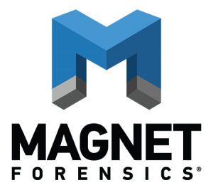

OVERVIEW

During the Fall 2021 semester, I am honoured to say that I was given the opportunity to work as a Software Developer at Magnet Forensics - an innovative and quickly expanding cybersecurity company. During the work term, I was able to attend a meeting in which a forensics detective presented a criminal case where company products were used to catch a suspect. This presentation allowed me to see the full potential of how my role at Magnet Forensics had a direct impact on promoting justice and revealing the truth behind complex criminal cases.
In this report, I will go into further detail about my employer and some of the organization’s accomplishments, the position I worked in, what I was required to do, and I will finish off by going over my work term learning goals to overall provide an adequate summary of what I was able to accomplish during my first work term!